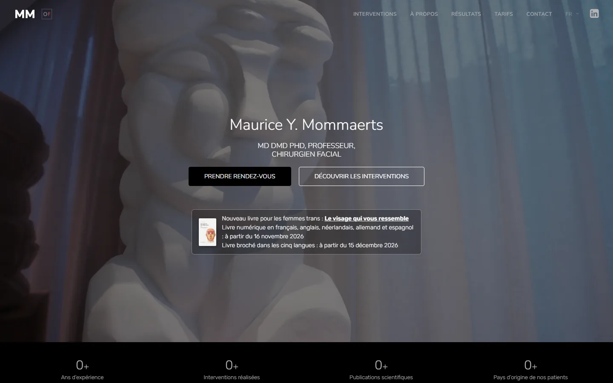
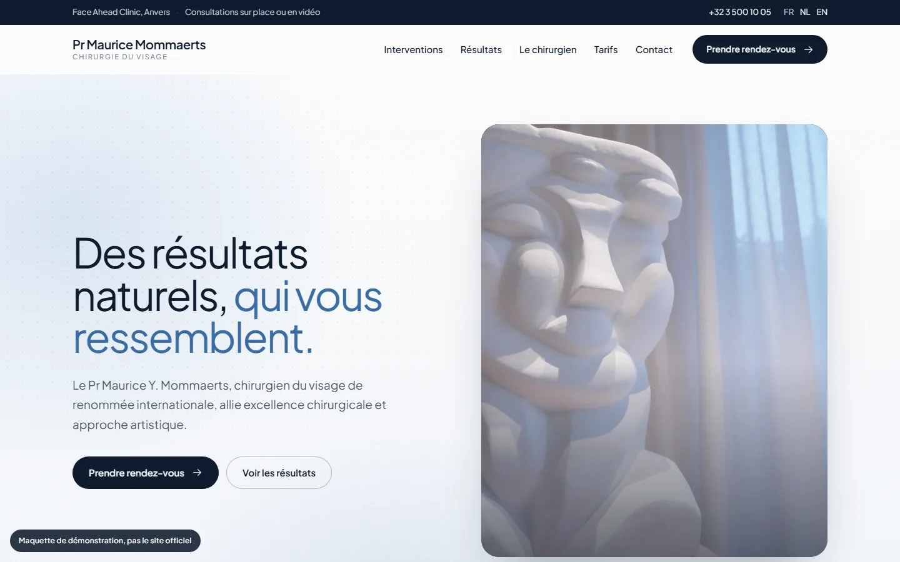
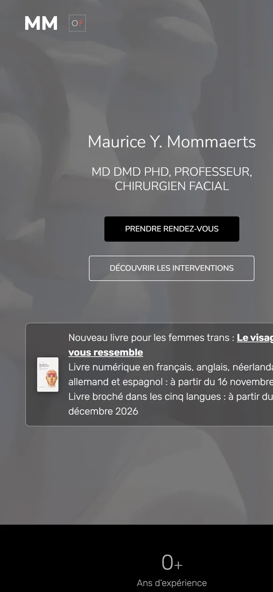
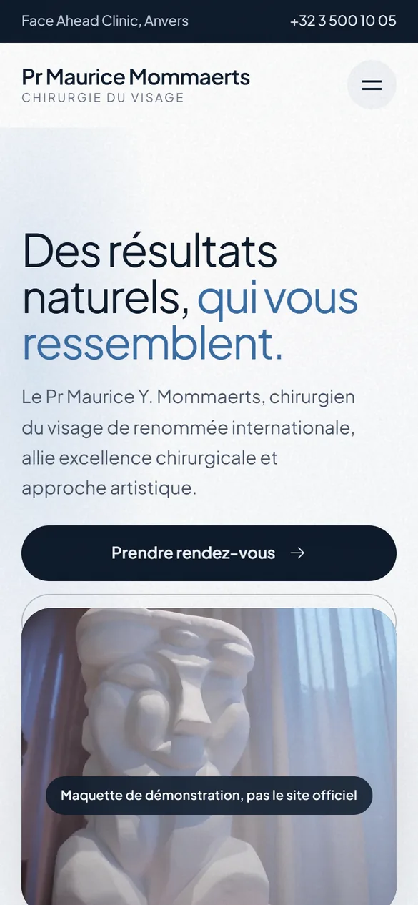

Proposition de refonte
Votre site, avant et après.
Faites glisser la poignée, comme pour vos propres résultats. Même contenu, même vidéo, mêmes cas patients : une mise en scène qui donne envie de prendre rendez-vous.


Actuel NouveauSur téléphone, là où vos patients vous découvrent.
Le premier écran, tel qu'il s'affiche sur un iPhone.


Mesuré par Google, pas par nous.
Avec Lighthouse, l'outil de Google qui teste les sites sur mobile. Médiane de 3 mesures par site.
6,3 s 4,7 spour afficher le contenu principal de la page d'accueil sur mobile
80 100/100en accessibilité : lisible par tous, y compris les lecteurs d'écran et les patients malvoyants
Trois choses à essayer sur la nouvelle version.
L'ouverture
Faites défiler la page d'accueil : la vidéo de la sculpture s'ouvre en plein écran.
OuvrirLa carte du visage
Le patient touche une zone et voit les interventions, leur durée et les résultats.
EssayerLes résultats
Tous les cas avant-après, filtrés par intervention, avec un comparateur à glisser.
Voir